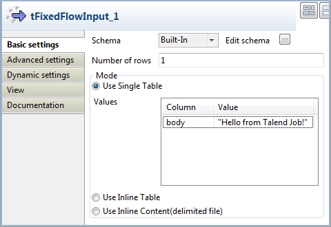
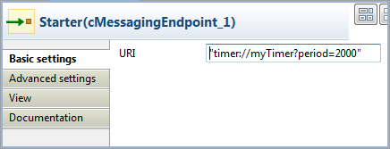
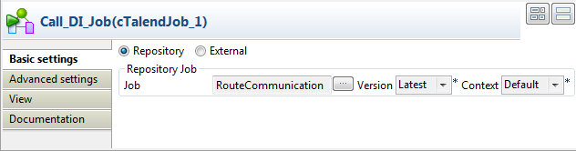

Warning
This component is available to ESB Studio users only.
|
Component family |
ESB/Route | |
|
Function |
tRouteOutput sends messages from a Job to a Route. | |
|
Purpose |
tRouteOutput allows you to send messages from a Job to a Route. | |
|
Basic settings |
Output Schema |
A schema is a row description, i.e., it defines the number of fields that will be processed and passed on to the next component. The schema is either Built-in or remote in the Repository. Click Edit Schema to make changes to the schema. Click Sync columns to retrieve the schema from the previous component connected in the Job. |
|
|
|
Built-in: No property data stored centrally. |
|
|
|
Repository: Select the Repository file where Properties are stored. |
|
|
Camel |
Enter the message parameters corresponding to the columns you defined in the schema dialog box via the Edit schema button. |
|
|
Type |
Select between: Body: Used to set the body of a
Route, equals the code
Property: Used to set the
property of a Route, equals the code
System: Used to set the system
property, equals the code Header: Used the set the output
header, equals the code |
|
|
Name |
This column is used to set the name for the parameter when its type is either Property, System or Header. This column is ignored when the type is Body. |
| Advanced settings |
tStatCatcher Statistics |
Select this check box to gather the Job processing metadata at a Job level as well as at each component level. |
|
Usage |
This component can be used as the end component and thus requires an input component. | |
|
Limitation |
The Job using a tRouteOutput must be launched only within a Route using the cTalendJob component. | |
This scenario describes how to send messages from a Job to a Route using the tRouteOutput component. To do this, we need to build a Job to send the message and then create a Route using the cTalendJob component to call the Job and receive the message.
For more information about how to use the Mediation components, see Talend Open Studio for ESB Mediation Components Reference Guide.
In this section, we will build a Job named RouteCommunication to send the message to a Route.

Drag and drop a tFixedFlowInput and a tRouteOutput from the Palette onto the design workspace.
Right-click the tFixedFlowInput component, select Row > Main from the contextual menu and click the tRouteOutput component.
Double-click the tFixedFlowInput component to open its Basic settings view in the Component tab.
Click the three-dot button next to Edit Schema. In the schema dialog box, click the plus button to add a new line of String type and name it body. Click OK to close the dialog box.

In the Number of rows field, set the number of rows as 1.
In the Mode area, select Use Single Table and input the following request in double quotation marks into the Value field:
Hello from Talend Job!Double-click the tRouteOutput component to display its Basic settings view in the Component tab.

Make sure that tRouteOutput has one element body. Set its type to Body.
Press Ctrl+S to save your Job.
In this section, we will switch to the Mediation perspective and create a Route to receive the message sent from the Job.

Drag and drop a cMessagingEndpoint, a cTalendJob, and a cLog component from the Palette onto the design workspace.
Link the components with the Row > Route connection as shown above.
Label the components for better identification of their roles.
Double-click the cMessagingEndpoint component to open its Basic settings view in the Component tab.
In the URI field, enter
"timer://myTimer?period=2000"to start message exchanges every 2000 milliseconds.Double-click the cTalendJob component to display its Basic settings view in the Component tab.
Select Job RouteCommunication from the repository.
The cLog component will monitor the message exchanges and does not need any configuration.
Press Ctrl+S to save your Route.